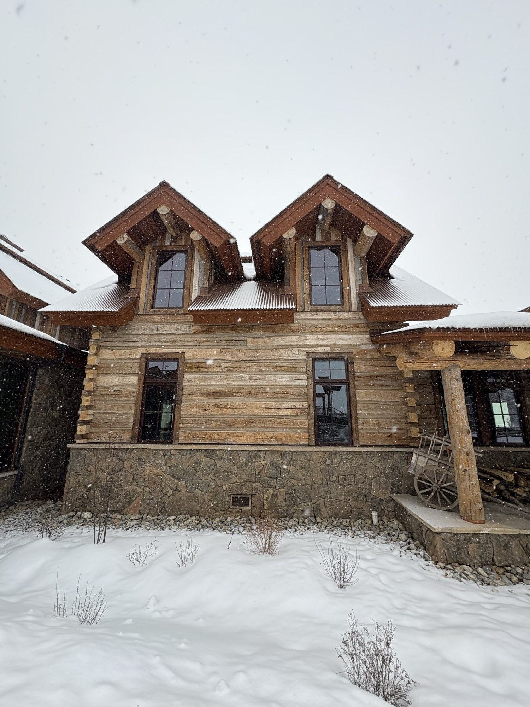
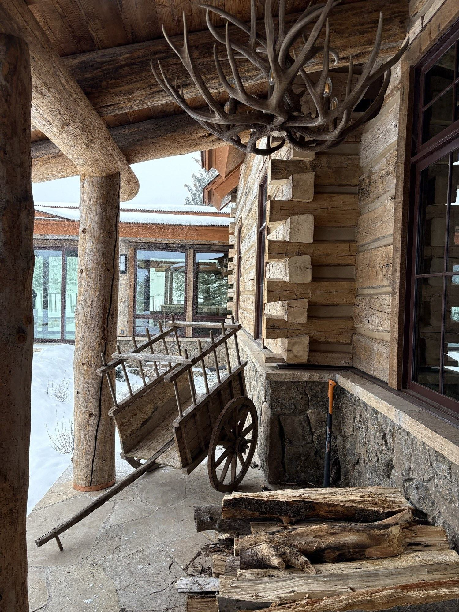
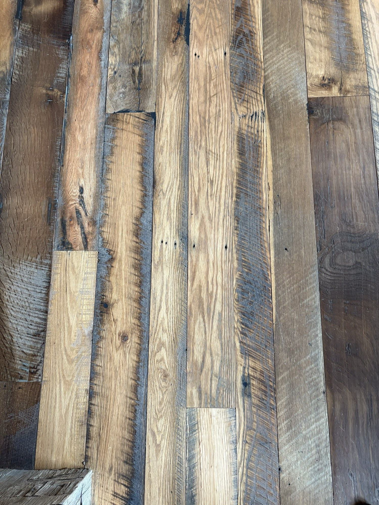

Siding Contractors in Steamboat Springs
Siding that keeps water out, holds heat in, and meets fire code where your parcel requires it — installed over a properly detailed weather barrier so the wall behind it stays dry for decades. A written scope before we start, a photo update every working day, and the owner on every job.
Call or text 970-393-6239Photos of your space welcome · 30-minute response, Mon–Fri
Serving Steamboat Springs and the Yampa Valley · Written proposal within 48 hours of your walkthrough · Owner-run, licensed and insured in Colorado.
What goes into a siding project
Here's what a siding project really involves up here — what keeps water out, what meets fire code, and what moves the budget — in plain English. You'll leave knowing enough to make confident calls, without the overwhelm. Five decisions decide whether siding protects your house for decades or lets water and cold in.
🏡 Material (the face of the house)
The honest choices up here: fiber cement (the mountain workhorse — handles UV, snow, and freeze-thaw, holds paint, low maintenance, and reads as wood without the upkeep), real wood (warm and beautiful, but it wants regular sealing or painting to survive altitude sun and snowmelt), stone or stone veneer (durable accent at the base and on columns), and mixed materials (the layered look most mountain homes want).
What matters: the material sets both the look and how much maintenance you sign up for over the next thirty years.
🔥 WUI fire requirements (where the parcel requires it)
Much of Routt County sits in a wildland-urban interface fire zone, and Colorado has adopted wildfire-resiliency building code. On affected parcels, exterior materials and details may need to be ignition-resistant.
What matters: the requirement is specific to your parcel and the current adopted code, so we confirm it before we scope — and where it applies, we install assemblies that meet it.
💧 Water-resistive barrier and flashing (the part you never see — and the part that matters most)
Behind every good siding job is a continuous weather barrier (house wrap) and properly lapped flashing at every window, door, and penetration.
What matters: water is the wall's biggest enemy. If moisture gets behind the siding and can't drain or dry, you get mold and rot inside the wall where you can't see it — the failure that costs tens of thousands later. Done right, the barrier and flashing send water back out and the wall stays dry.
🧥 Continuous exterior insulation (the warmth you feel and the bill you pay)
Steamboat is Climate Zone 7B — cold. Adding a layer of continuous exterior insulation under the siding wraps the house in a thermal blanket and cuts the "thermal bridging" where heat escapes through the framing.
What matters: at altitude this is a real difference in comfort and heating cost — and re-siding is the one moment it's straightforward to add.
📐 Trim and detailing (what makes it read as custom)
Corner boards, window and door trim, fascia, soffit, and the transitions between materials.
What matters: trim is both the finish and the waterproofing — clean, well-flashed details are where a house reads as crafted instead of wrapped, and where water is either stopped or let in.
Siding is one piece of the envelope — see everything we remodel outside in Exterior Remodels, including decks built for the same winters.
What drives the cost — and how we keep you in control
Most of a siding number comes down to a few things: material grade (fiber cement, wood, and stone sit at different levels), the size and complexity of the house (more corners, gables, and details mean more cut-and-fit labor), what's behind the old siding once we open it up (a failed barrier or rot adds scope), whether your parcel needs ignition-resistant materials, and whether you add continuous exterior insulation. We walk all of it with you before you commit, put it in a written line-item scope, and the price changes only by a change order you approve.

Built for Steamboat
The mountains are why siding up here is about protection first, looks second:
How Elk Ridge does your siding
We treat the wall as a system, not just a surface. Before any siding goes up, we confirm whether your parcel needs ignition-resistant materials, detail the weather barrier and flashing so the wall drains and dries, and — where it makes sense — add continuous exterior insulation while the wall is open. The owner is on the job, you get a photo and status update every working day plus a short written weekly recap, and the work is backed by the full Elk Ridge Promise — the 30-Minute Promise, No-Surprise Scope, Daily Visibility, Broom-Clean, and Verified-Crew — plus a written 2-year workmanship warranty and final payment only after you sign off.
A simple guide
A few questions to think through before we talk — they make the walkthrough faster and the plan sharper:
What's driving the project — looks, failure, or both?
Tired-but-fine siding is a different scope than siding that's letting water in. Knowing which helps us scope it honestly.
Do you know if you're in the fire zone?
If your parcel is in the wildland-urban interface, material choices may be set by code — we confirm it, but it helps to flag it early.
How much maintenance do you want?
Near-zero upkeep points to fiber cement; the warmth of real wood points to a sealing-and-painting routine.
Are you open to adding insulation while the wall's open?
Re-siding is the easiest time to improve comfort and cut your heating bill — worth deciding on purpose.
What's your timeline relative to the season?
Siding goes best in the dry months, and trades book several weeks out in peak season — earlier planning means a better window.
Siding materials & wall systems, compared honestly
Most siding searches start with a material name. Here's a straight comparison of the options we install in Steamboat Springs and across Northwest Colorado — what each one is good at, where it falls short, and when we'd steer you toward it or away from it. The right answer depends on your exposure, your maintenance appetite, and whether your parcel is in the fire zone. See how these fit the rest of your house in our materials guide and the full Exterior Remodels picture.
Fiber cement siding
The mountain workhorse — lap, panel, or shingle profiles in a cement-and-cellulose board that shrugs off UV, snow, and freeze-thaw and holds paint for years.
Choose it when you want near-zero maintenance and a clean, custom look. Look elsewhere when you specifically want the grain and warmth of real wood.
Engineered wood siding
Wood strands bonded with resins and a factory finish — lighter than fiber cement, with a warmer wood texture and long lap lengths that mean fewer seams.
Choose it when you want a wood look with less upkeep than solid cedar. Watch for water management — like all wood-based products, the flashing and clearances below grade matter.
Cedar & natural wood
Real cedar lap, bevel, or shingles — the genuine article, and beautiful on a mountain home. At altitude it wants regular sealing or painting to hold up to intense sun and snowmelt.
Choose it when the warmth of real wood is the whole point and you'll keep up the maintenance. Look elsewhere when you want to set it and forget it.
Board-and-batten & vertical siding
Vertical boards with narrow battens over the seams — the look behind a lot of mountain-modern and farmhouse exteriors. Available in fiber cement, engineered wood, or cedar.
Choose it when you want vertical lines and a contemporary or agrarian character. Detail it carefully — vertical joints need correct flashing so water sheds and doesn't sit.
Metal-accent & black siding
Standing-seam or corrugated metal panels and dark, matte cladding — increasingly the signature of mountain-modern homes, often mixed with wood and stone rather than used wall-to-wall.
Choose it when you want a crisp, modern accent that handles weather well. Plan for sun-side heat gain and panel movement, which we detail for at altitude.
Mixed materials & stone veneer
The layered look most mountain homes actually want — fiber cement or wood fields, stone or stone-veneer bases and columns, metal or timber accents.
Choose it when you want depth and a custom exterior. The craft is in the transitions — each material change is a flashing detail done right.
The wall system that keeps siding working
Siding is the visible layer of a system, and the system is what actually keeps your wall dry and warm. These are the details we get right behind every board:
Not sure which material or system fits your house? That's exactly what the walkthrough is for — see how it all connects in Materials and Exterior Remodels.
Questions homeowners ask us
Will my siding meet wildfire code?
Fiber cement or wood — what do you recommend up here?
What's behind the siding, and why does it matter?
Should I add insulation when I re-side?
How will I know what's happening?
Board-and-batten or lap siding — which suits a mountain home?
What is a rainscreen, and do I need one?
Can you do black or metal-accent mountain-modern siding?
What does the warranty cover?
Siding craftsmanship you can see



Real finished craftsmanship completed by our crew, used with permission — no stock images, no other company's work shown as our own. As our first Elk Ridge siding projects complete with homeowner consent, full project sets will appear here.
Get siding built for the mountains
970-393-6239Written proposal within 48 hours of your walkthrough. Calls and texts answered Monday–Friday, 7am–5pm MT — photos welcome. Messages returned the same business day. You reach us directly — no call center, no obligation.